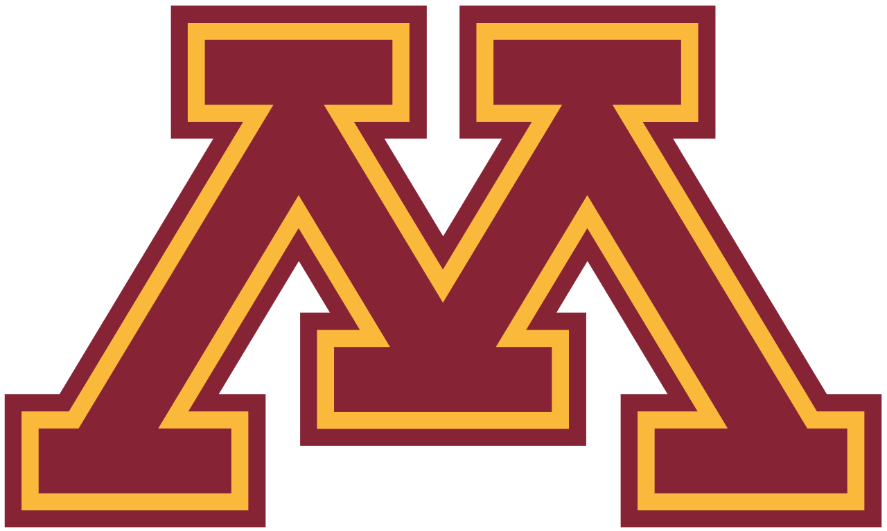

Brent Tester's Portfolio
Welcome!
Hello everyone! My name is Brent Tester... thank you for visiting my portfolio! If you have any questions about the information on this website, or you would like to contact me for any reason, please reach out to me via email at teste033@umn.edu or brent.h.tester@gmail.com.
About Me: Academics

I am currently a senior at the University of Minnesota pursuing a Bachelor of Science in Technical Writing and Communication with an emphasis in IT and Design.
Please follow this link if you would like more information about the program! In addition to being a student, I am also a student office assistant and undergraduate peer advisor for the Department of Writing Studies.
Some of my academic interests and relative coursework include:
- Rhetorical theory
- Document design
- Technical writing
- Social justice
- Usability and accessibility
About Me: Personal
I grew up in Collierville, Tennessee (~30 miles outside of Memphis), and I relocated to Minneapolis, Minnesota upon graduating from high school. I much prefer it here! Outside of my studies, I spend most of my time either at my computer—playing games, chatting with friends, tinkering with hardware—or outside—almost exclusively playing golf. Otherwise, I enjoy reading (I have a particular interest in critical theory/philosophy), film, cooking, and spending time with my family and friends.